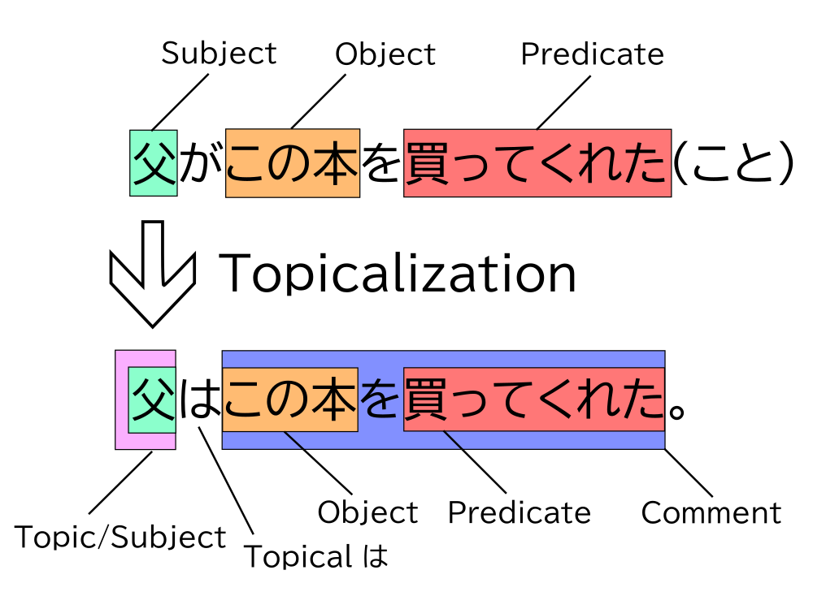
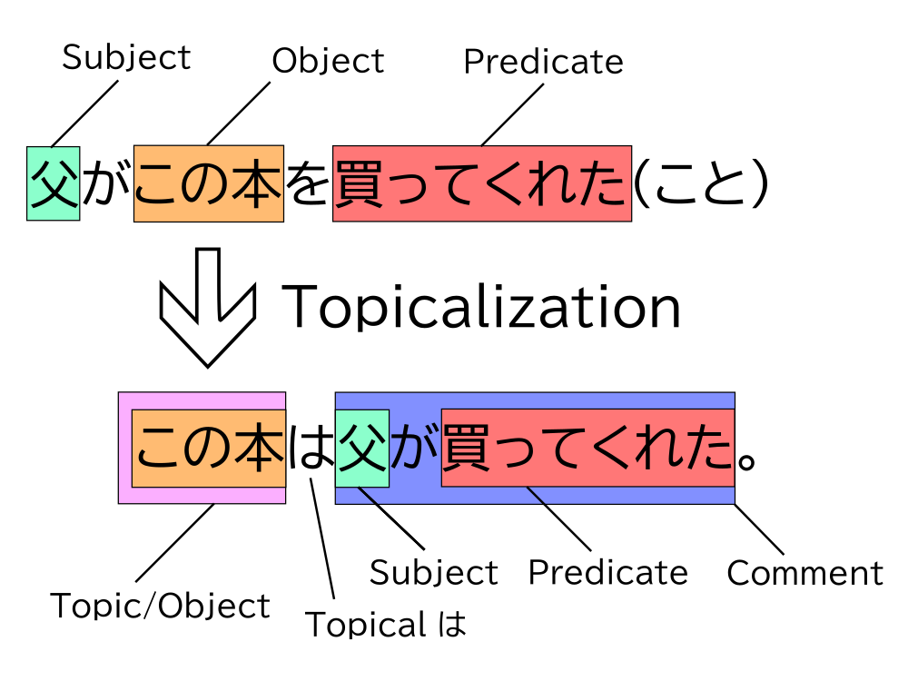
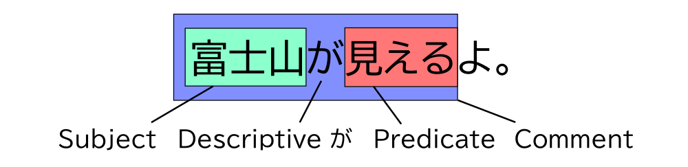
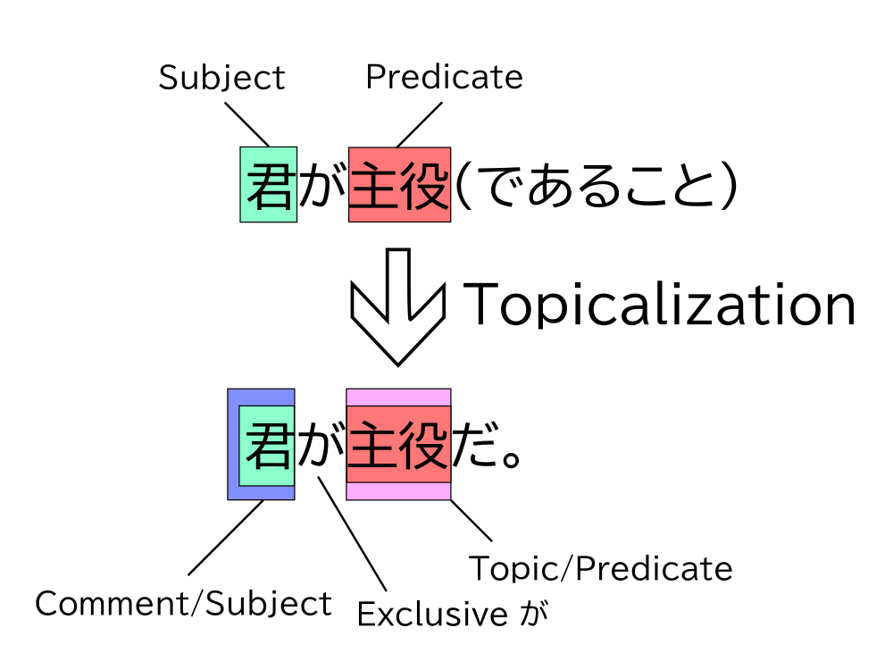
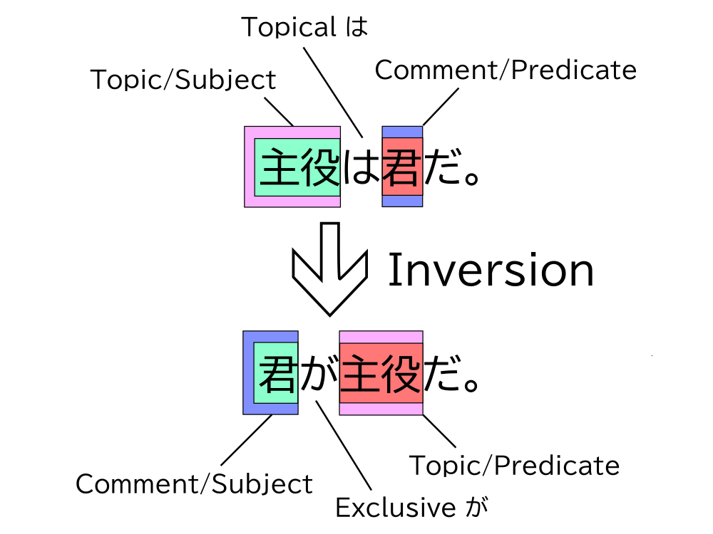

This guide heavily borrows concepts and examples from Hisashi Noda’s (野田尚史) published works『｢は｣ と ｢が｣』(1996) and『文の構造と機能からみた日本語の主題』(1998), including his model for the nine sentence structures and their syntax. The flowchart model is loosely based on the flowchart in these books. Unless explicitly mentioned, all examples I feature here are examples from these two books. If you wish to go further into this topic, I recommend purchasing a copy of『｢は｣ と ｢が｣』.
The Primary Functions of は and が
Topical は
The Japanese language has a concept known as the topic. As its name implies, the topic is simply something that the speaker is talking about. In Japanese, topics are commonly marked by は. That means the topic of a sentence will often be followed immediately by は. We will call this usage topical は. Once a topic has been introduced in Japanese, it can persist across the end of its sentence and set the general theme for the following sentences. Almost all sentences that have a topic marked by topical は take the structure of:
Topic+Topical は+Comment
Whatever comes after topical は is known as a comment, which is something we want to say about the topic. The comment contains the focus of the sentence, so it expresses information the speaker wants the listener to know about the topic.
Think of topical は as the default form of は. All it does is mark the topic, and it adds no further nuance to the sentence.
Descriptive が
The particle が is used to mark a subject. A subject is one of two main components of a sentence, the other being the predicate. The subject is usually a noun; but the predicate can be a noun, adjective, or verb.
There are two main usages of this subject-marking particle が. The most common one is descriptive が, and it has its name because it’s usually used to describe things or events1. The other usage, exclusive が, will be introduced later in the chapter.
A sentence with a subject marked by descriptive が may look like:
Subject+Descriptive が+Predicate
Think of descriptive が as the default form of が. All it does is mark the subject, and it adds no further nuance to the sentence.
Topicalization
All kinds of words and phrases can become topics in Japanese. When は marks some word, we say that the word has been topicalized. That is, it has been made into a topic through the process of topicalization. After some part of the sentence is topicalized, it will usually appear at the front of the sentence.
It is very common for は to topicalize a subject. This is where the confusion between は and が comes from. When a subject is marked by は, this does not mean it has ceased to be a subject. It is both a topic and subject at the same time.
The subject is not the only part of a sentence that は can topicalize. The most common parts of the sentence to be topicalized are case particles and the nouns that they mark. Nouns that are marked by case particles are known as case-marked nouns. You may already be familiar with all of the case particles. There are nine of them: が, を, に, で, へ, と, から, より, and まで.
What sets が and を apart from other common case particles is that they are deleted from the noun completely when the noun they are marking is topicalized. In other words, you’ll never hear ｢×ここがは～｣ or ｢×ここをは～｣. The case particles に, で, and へ are also often deleted.
| Case-Marked Noun + は | Result |
|---|---|
| ここが + は | ここは |
| ここを + は | ここは |
| ここに + は | ここには or ここは |
| ここで + は | ここでは or ここは |
| ここへ + は | ここへは or ここは |
| ここと + は | こことは |
| ここから + は | ここからは |
| ここまで + は | ここまでは |
The topic and the subject exist on different dimensions in Japanese.2 A word can be a topic and subject at the same time, but all subjects are not necessarily topics, and all topics are not necessarily subjects. You will see examples of this dynamic in the topicalization diagrams once we start covering basic sentence structures.
The Secondary Functions of は and が
Contrastive は
Contrastive は is a special usage of は that contrasts what it’s marking with something else. When a speaker uses contrastive は, they’re pointing out a difference about what it marks with some other thing, whether or not that other thing is explicitly mentioned.
1. 子供たちはカレーは作っているが、ごはんはまだ炊いていない。
The kids are making curry, but they haven’t cooked the rice yet.
In example (1), the topic of the sentence is “子供たち” (kids), marked by topical は. The other two は that are underlined are contrastive. This sentence contrasts the state of the curry “カレーは作っている” (are making curry) with the state of the rice “ごはんはまだ炊いていない” (haven’t cooked the rice yet). In general, when there are two or more は in a clause, the first は may or may not be contrastive, and the は following the first は are increasingly contrastive.
2. 子供たちはカレーは作っている。
The kids are making curry. (But…)
Example (2) is a sentence with only one contrastive は. Even though the making of curry is not explicitly being contrasted with something else, the contrastive は here implies that there is some other thing that the kids have not cooked yet.
You will learn more about contrastive は in Chapter 3: Principle of Emphasis.
Exclusive が
Exclusive が is a special usage of が that specifies whatever it marks3. The subject that exclusive が marks is singled out from a set of other possible things. Those other things may or may not be explicitly stated. In other words, everything else except for what exclusive が marks is excluded from consideration.
3. 神戸より大阪のほうがにぎやかだ。
Osaka is much more lively than Kobe.
Example (3) specifies that “大阪のほう” (Osaka) is lively, more so than “神戸” (Kobe). Since the subject Osaka is marked by exclusive が, it has been given exclusive emphasis.
The premise of example (3) is that something is “(神戸より)にぎやか” (more lively than Kobe), and until the sentence is spoken, the listener doesn’t know what that is. Thus, the topic of the sentence is “(神戸より)にぎやか,” and the comment of the sentence is “大阪のほう.”
All sentences with exclusive が take this general structure4, in which exclusive が marks the comment, and predicate refers to the topic. Sentences that use exclusive が are called specificational sentences.
Comment+Exclusive が+Topic
You’ll learn more about exclusive が when we go over the specificational sentence structure and the Principle of Emphasis.
Sentence Structures
All sentences in Japanese that use は or が can be categorized into one of nine structures, each represented by one of the following sentences.
- ｢父はこの本を買ってくれた。｣ - Basic Topic Sentence
- ｢象は鼻が長い。｣
- ｢かき料理は広島が本場だ。｣
- ｢辞書は新しいのがいい。｣
- ｢この問題は解くのが難しい。｣
- ｢花が咲くのは7月ごろだ。｣
- ｢このにおいはガスが漏れてるよ。｣
- ｢富士山が見えるよ。｣ - Topicless Sentence
- ｢君が主役だ。｣ - Specificational Sentence
The first seven structures (i through vii) are called は structures because they all contain topical は. The last two structures (viii and ix) are called が structures because they only contain が. viii uses descriptive が, and ix uses exclusive が. In the following sections, we will learn about the three structures in bold (i, viii, and ix), as these are the most common sentence structures in Japanese. The rest of the structures will be introduced in Additional は Structures.
By familiarizing yourself with the prototypical sentence structures of Japanese grammar, my hope is that you’ll be able to read a sentence and figure out what は or が is doing in that sentence. In Chapters 2 through 6 of this series, you’ll learn why one particle is preferred over the other and how to choose between using は and が.
｢父はこの本を買ってくれた。｣: Basic Topic Sentences
父はこの本を買ってくれた。
My dad bought this book for me.
Basic topic sentences have the simplest structure of all the は structures. It’s what we get when we topicalize a case-marked noun (anything marked by the case particles が, を, に, etc.) or an adverb.
The following diagram shows the topicalization of the subject “父” (dad) in ｢父がこの本を買ってくれた(こと)｣. This leads to the sentence ｢父はこの本を買ってくれた。｣.

The “こと” in the diagram above represents that this part isn’t being interpreted as a spoken sentence, but as a precursor to the sentence, a case relation. Case relations are like a sentence’s skeleton. They contains the sentence’s bare meaning, without any concept of a topic or comment applied yet. Think of them as tools to help us analyze the meaning of sentences.
Remember that は can also mark objects, which are generally marked by を. When the object is topicalized, は replaces を. Then, the topic is moved to the beginning of the sentence. Just like the subject, the object doesn’t stop being an object when it’s topicalized. The following diagram shows the topicalization of the object “この本” (this book) in the case relation ｢父がこの本を買ってくれた(こと)｣. This leads to the sentence ｢この本は父が買ってくれた。｣.

The two sentences in the diagrams above come from the same case relation, so they have the same basic meaning. The only difference between the two sentences lies in which word is topicalized, which decides what each sentence is talking about.
Pay attention to the topic and the comment of each sentence. The sentence ｢父はこの本を買ってくれた。｣ is about the father of the speaker, and it mentions that this father bought the book for her. The sentence ｢この本は父が買ってくれた。｣ is about the book in question, and it mentions that the book is something the speaker’s father bought for her.
Examples of Basic Topic Sentences
More examples of sentences with topics are shown below.
Remember that when ｢〜に｣, ｢〜で｣, or ｢〜へ｣ are topicalized, they may become ｢〜は｣ instead of ｢〜には｣, ｢〜では｣, or ｢〜へは｣. This can happen when ｢〜に｣, ｢〜で｣, or ｢〜へ｣ mark location, which is shown in examples (4) and (5).
4. 日本に温泉が多い(こと)
↓ Topicalization
日本には温泉が多い。
日本は温泉が多い。
There are a lot of onsen in Japan.
5. 弟に特技がある(こと)
↓ Topicalization
弟には特技がある。
弟は特技がある。
My brother has a special skill.
6. 沢田が東京へ行った(こと)
↓ Topicalization
沢田は東京へ行った。
Sawada went to Tokyo.
7. だが、ヨーロッパでは最近、ペアの両方の内側にダイヤを埋め込んだ既成品の結婚指輪が、一般にも売られるようになってきた。
But in Europe, pairs of wedding rings with diamonds set in both rings have recently become available to the general public.
8. 結局、それ以来彼とは会っていない。
I haven’t met with him since.
9. ｢最近まではプロレスラーだったんだ。｣
“Until recently, I was a pro wrestler.”
10. 大きな窓からは日の光が差し込んでいる。
Through the big window, a ray of sunlight cut into the room.
Adverbs that express tense or extent (such as きょう, 今, その頃, いくらか, ほとんど, and 時々) may also be topicalized, like in (11).
11. 昨日は花子が学校を休んでいた。
Yesterday, Hanako didn’t come to school.
Topical vs. Contrastive は
I previously mentioned that ｢〜へ｣, ｢〜と｣, ｢〜から｣, and ｢〜まで｣ can be topicalized by adding は after them. But in reality, when は comes after these four case markers, it almost always becomes contrastive は, making these usages both topical and contrastive. In many cases, the は stops being topical altogether, becoming purely contrastive. The reason for this lies in the fact that topics usually appear at the beginning of a sentence. In the canonical Japanese word order, nouns marked by ｢〜へ｣, ｢〜と｣, ｢〜から｣, and ｢〜まで｣ tend to appear nearer to the end of the sentence, after the subject. The act of taking these marked nouns and topicalizing them imparts contrastive nuance.
Take a look back at example (6). If we were to topicalize “東京へ” instead of “沢田が” in the case relation, we would end up with the sentence in (12). The は in this sentence is highly contrastive.
12. 沢田が東京へ行った(こと)
↓ Topicalization
東京へは沢田が行った。
To Tokyo, Sawada did go.
The は in examples (7) through (10) in the previous section can be viewed as topical は, but they all have some contrastive nuance as well. (13) and (14) show examples of sentences with high contrastive nuance.
13. 海へはあっという間に着いた。
To the beach, we arrived in no time.
14. 大島とはこのまえ僕がけんかしたよ。
With Ojima, I did recently argue.
｢〜を｣ expressing movement (15) and ｢〜に｣ expressing destination (16) also tend to be contrastive when marked by は.
15. 本町はこのバスが通ります。
As for Honmachi, this bus will pass it.
16. 神戸には5時ごろ選手たちが着きます。
To Kobe, the players will arrive around 5 ‘o clock.
｢〜で｣ expressing means cannot be topicalized, so (17) is highly unnatural.
17. ×船では, 暇がある学生が沖縄に行った。
By boat, the students with free time went to Okinawa.
｢富士山が見えるよ。｣: Topicless Sentences
富士山が見えるよ。
I can see Mount Fuji.
｢富士山が見えるよ。｣ is a sentence that does not contain a topic, and we call these kinds of sentences topicless sentences. Sentences with this structure use descriptive が.

Topicless sentences may rely on previous sentences or the environmental context as their topic. They’re called topicless sentences because a topic isn’t contained within them, but strictly speaking, they may be viewed as stand-alone comments which mention something about a topic. For example, the topic of ｢富士山が見えるよ。｣ may come from a previous question like, ｢そこの景色はどうだ？｣.
18. ｢そこの景色はどうだ？｣
(ここの景色は) ｢富士山が見えるよ。｣
“How’s the view over there?”
(As for the view here,) “I can see Mount Fuji.”
Previous sentences don’t need to contain topical は to establish a topic. Remember that a topic is simply what the sentence is broadly “about.”
There are three broad categories of topicless sentences, and all of them are descriptions. This is why we call が used in topicless sentences descriptive が.
Descriptions of Something Perceptible
A sentence fits into this category when it describes something that the speaker can directly see or perceive.
19. 何か音が聞こえるわ。耳を澄ませて!
I hear something. Listen closely!
20. 月がきれいですね。
Look, isn’t the moon gorgeous?
Sentences that describe perceptible events that will happen very soon also fall into this category.
21. いいか…今…血管がふさがる
Listen… his veins will constrict soon…
Descriptions of Events
A sentence fits into this category when it describes an event that the speaker cannot directly see or perceive. This may be something that happened in the past, right now, or even in the future that the speaker cannot perceive. The event cannot be permanent; it has to happen within a given frame of time.
22. きのう合格発表があった。
The exam results were announced yesterday.
Descriptions of Consequences
A sentence fits into this category when it describes something that will happen if some other condition is fulfilled.
23. ボタンを押すと、音が出る。
A sound will play when you press the button.
It’s very important to understand that just because a sentence fits into one of these categories, doesn’t necessarily mean the subject will always be marked by が. If some portion of the sentence has been topicalized, it will feature は and fit into one of the は structures. If the subject has been topicalized, が will be dropped completely and replaced by topical は. We’ll learn more about when to use topical は versus descriptive が in Chapter 4 and Chapter 5.
Examples of Topicless Sentences
24. ファーストフードもついにここまで⸺と思わせる ｢さしみバーガー｣が、神戸・
三宮 の高架下で人気を呼んでいる。
These “Sashimi Burgers” served under the railways at Sannomiya, Kobe have been turning heads, and it’ll make you think, “Just how far will they take fast food?”
25. カニといえば冬。が、北の海、オホーツクでは夏の味覚とか。八日朝、オホーツク産のズワイガニが大阪中央卸売市場に初入荷しました。
When it comes to crabs, we think of winter. But in the Sea of Okhotsk to the north, they’re a summer delicacy. On the morning of the 8th, a shipment of snow crabs from Okhotsk arrived at Osaka Central Market for the first time.
26. 松下電器産業が小型の自転車にモーターを組み込んだ ｢電気自転車｣ を八月からテスト販売する。
Panasonic will release its “electric bicycle”, a small, motorized bicycle for test sales starting August.
27. ｢水道の水が油臭い。｣
“The tap water smells oily.”
28. ｢今朝、お袋から電話があったよ。｣
“This morning, my mother called me.”
｢君が主役だ。｣: Specificational Sentences
君が主役だ。
You’re the lead actor.
Specificational sentences use exclusive が, which functions differently from the descriptive が used in topicless sentences. The predicate of a specificational sentence refers to the topic, so even though specificational sentences don’t use は, they are considered topic sentences.5 The sentence ｢君が主役だ。｣ is one such specificational sentence, and its topic is the predicate “主役” (lead actor). The structure of this sentence is depicted in the following diagram.

Remember that exclusive が functions as a way of specifying something. With this usage of が, whatever exclusive が marks is singled out from a set of other things. In the example ｢君が主役だ。｣, the speaker is specifying that “You, not anyone else, are the lead actor.”6
One way of understanding the specificational sentence ｢君が主役だ。｣ is to derive it from the basic topic sentence ｢主役は君だ。｣. These two sentences have approximately the same meaning. To achieve this, all we have to do is reverse the order of the topic and the comment, then replace topical は with exclusive が. This process is called inversion. If a sentence with は is inverted, it is a specificational sentence.7

A topic sentence with topical は takes the structure of
Topic+Topical は+Comment
whereas the inversion of this topic sentence, the specificational sentence, will take on the structure
Comment+Exclusive が+Topic
Examples of Specificational Sentences
29. ｢あ、あれが、おれのところに来た女性記者だよ｣
“Sh- She’s the journalist that came to my house!”
30. ｢そこが出口よ。｣
“The exit’s that way.”
31. ｢これが君の言っていた大変なことなのかい？｣
“Is this the ‘big problem’ you were getting worked up about?”
32. ｢この映画観ましたよ。｣と僕は言った。
｢誰が出てるの？｣
“I’ve seen this movie before,” I said.
“Who’s in it?”
33. ｢それがダイヤを見分ける、理想的な明るさなの｣
“That’s the ideal brightness for identifying diamonds.”
34. ｢ええ。でもずいぶんきれいにかたづいていたでしょ？｣
｢君がかたづけたの？｣
“Yep. But it was pretty neat and tidy, wasn’t it?”
“Did you clean it up?”
It’s worth mentioning that unlike basic topic sentences and topicless sentences, specificational sentences usually can’t be negative. (35a) is a completely natural specificational sentence, but its negative version, (35b), is awkward.
35a. 色の濃いほうがおいしそうに見える。
The one with a deeper color is the one that looks like it tastes good.
35b. ×色の濃いほうがおいしそうに見えない。
The one with a deeper color is the one that looks like it doesn’t taste good.
Continued in 2. The Flowchart Model...
Notes
-
You may have also heard this form of が referred to before as neutral-description が. ↩
-
Noda (1996) proposes that topical は exists on the lowest “situational mood layer”, while descriptive が exists on the highest “voice layer”. Contrastive は and exclusive が exist between the two, on the “polarity layer” (as in affirmative/negative predicates). ↩
-
You may have also heard this form of が referred to before as exhaustive-listing が, or exhaustive が. ↩
-
Except in the ｢かき料理は広島が本場だ。｣ structure and the selective-type of the ｢辞書は新しいのがいい。｣ structure. These are both double-subject structures. ↩
-
Since 野田 (1996) was published it has been contested whether or not this structure contains a topic; namely, by 天野 (1998) through grounds that this topic is actually a presuppositional phrase (前提句). The classification of copular sentences found in 今田 (2010) also uses this convention. 丹羽 (2007) claims that its predicate is the topic in meaning, and not the syntactic topic. ↩
-
However, the nuance of exclusion in this specific sentence is relatively weak, because we haven’t talked about any other person who could be the lead actor in the context of this example (See Types of Exclusion). ↩
-
The specificational sentence (指定文) is the inverse of the inverted specificational sentence (倒置指定文). Noda’s sentence typology does not explicitly differentiate between the inverted specificational sentence and the predicational sentence (措定文). The section on how to tell when inversion is possible is dedicated to teaching how to differentiate between the two, but I avoided alluding to 措定, as Noda also does. Both the predicational sentence and the inverted specificational sentence take the structure of ｢〜は〜だ。｣, while specificational sentences take the structure of ｢〜が〜だ。｣. ↩